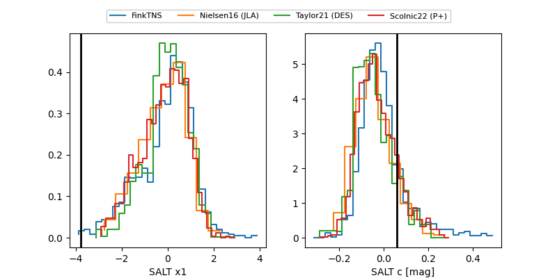

FINK: ZTF25abqqkyv
Lasair: ZTF25abqqkyv
ALeRCE: ZTF25abqqkyv
TNS: 2025xqm
YSE: 2025xqm
ZTF25abqqkyv (ztf,fink)
2025xqm (tns,yse)
equatorial (ra, dec) = (62.0902,-12.85144)
galactic (l, b) = (205.8028,-41.91585)

last atlasc=19.28, atlaso=19.34, ztfg=19.32, ztfr=19.18
1 atlasc, 1 atlaso, 2 ztfg, 3 ztfr detections